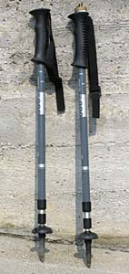
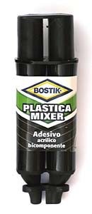
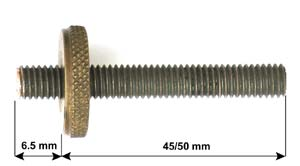
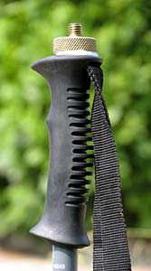
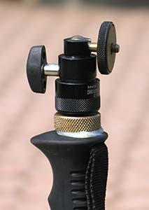
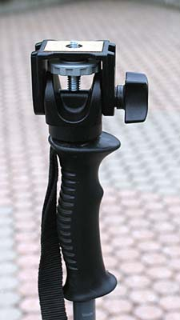
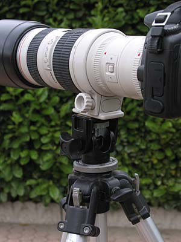

Foto & progetti
cheap monopods - monopiede economico
i consigli fotografici di R.Chirio
Luglio 2005
Le immagini fotonaturalistiche specialmodo quelle di animali selvatici, sono da realizzare esclusivamente con teleobiettivi e per ottenere i migliori risultati è d'obbligo usare pesanti cavalletti (anche con le ottiche stabilizzate), per raggiungere i luoghi della caccia fotografica, bisogna a volte camminare alcune ore, e a meno di avere un portatore al seguito, il cavalletto è da lasciare a casa per via del peso, pertanto un buon compromesso è l'uso del monopiede.
Considerando che un monopiede, di marca può anche superare i 100 euro, ho deciso di costruirne uno spendendo veramente poco, ed ottenendo inoltre una buona riduzione di peso rispetto a quelli commerciali.
Ho usato dei normali bastoncini da Trekking, leggeri e non meno robusti del monopiede fotografico. Normali bastoncini, con gli steli aperti e ben serrati, tengono facilmente un carico di 15kg. E' importante trovare dei bastoncini telescopici che completamente estesi raggiungano almeno 1,40 - 1,50 mt.
I bastoncini possono continuare ad essere usati per raggiungere il luogo della caccia fotografica, dopo l'applicazione della boccola filettata la loro funzionalità non è ridotta.
Per la realizzazione è richiesta una certa abilità ed attrezzatura nel fare bricolage. Il costo finale è vicino a zero euro, se in casa, già abbiamo i bastoncini, la colla e la barra filettata.

materiale:
● 1 oppure due bastoncini telescopici da trekking economici, tipo Quechua Forclaz 300 reperibili da Decathlon
● 1 barra di ottone filettato lunghezza minima 55mm, filetto 3/8 pollice passo gas (*)
● 1 rondella in ottone diametro esterno 30mm interno 10mm spessore 5mm (*)
● colla acrilica bicomponente tipo Bostik Plastica Mixer (molto valida!)
(*) Non è facile da trovare, va ordinata in ferramenta, se c'è l'amico in grado di realizzare al tornio un pezzo unico meglio ancora.

realizzazione
La realizzazione dell'attacco fotografico è stata fatta per uno solo dei bastoncini e con un filetto da 3/8 pollice, quello grosso non adatto per attacco camera, ma per teste fotografiche e teleobiettivi di grosse dimensioni. Eventualmente per fissare la fotocamera basta avvitare un raccordo da 1/4 o una piccola testa a sfera da cavalletto.

Tagliare di misura la barra filettata, oppure realizzare al tornio il pezzo completo della flangia da 5 mm di spessore e diametro 30mm. Il filetto sulla parte a destra non è necessario, in quanto rimane dentro al manico del bastoncino e sarà fissato con la colla acrilica.Forare la parte posteriore del bastoncino con una punta da 3mm, allungare prima la parte centrale del bastoncino, per evitare di rovinare la parte interna quando la punta entra nel tubo. Entrare con la punta per massimo 60mm, continuare ad alesare il foro, con una punta da 6mm e poi da 8mm, infine da 10mm, passare più volte la punta per avere il percorso privo di sbavature.

Provare ad inserire la barra filettata preparata di misura, se entra facilmente fino in fondo e la rondella appoggia bene sulla gomma della manopola del bastoncino, possiamo ora procedere ad incollare il tutto. Attenzione la colla suggerita è di forte presa e indurisce in pochi minuti. Prima di mescolare la colla accertasi che sia tutto a posto per l'assemblaggio.
La quantità di colla necessaria è circa il contenuto di un cucchiaino. Mescolare bene le due parti in percentuali uguali. Mettere circa la metà del collante dentro il foro, la parte rimanente sul filetto e sotto la rondella.
Spingere a fondo e con forza il gruppo del tirante filettato, la parte superiore dove avviteremo la testa o il tele deve essere non più sporgente di 6.5mm per non rovinare gli attacchi che saranno applicati.
Dopo circa 15 minuti la colla sarà indurita.

Non ci resta che collaudare il nostro monopiede, fissare una testa sul filetto e chiudere leggermente, ricordiamoci che la colla potrebbe non essere completamente polimerizzata. In caso di dubbio sulla colla attendere 24 ore.
Verificare la solidità dell'insieme e poi applicare una fotocamera o teleobiettivo e buon divertimento con il vostro nuovo monopiede.
Eventualmente il secondo bastoncino può essere attrezzato con un filetto da 1/4 di pollice, così da montare direttamente una fotocamera o piccolo teleobiettivo.


L'ottima testa per monopiede, Manfrottto 234 può essere vantaggiosamente usata su normali treppiedi.
Questa soluzione ci permette di avere una testa molto leggera, comunque ribassata e stabile, più di una normale testa a tre movimenti.
Uso questa soluzione per quando si deve camminare in montagna e oltre 500gr in meno di peso fanno sempre comodo.....
Non si risponde per danni a cose e persone e per un uso improprio della realizzazione.
© Roberto Chirio: all rights reserved.